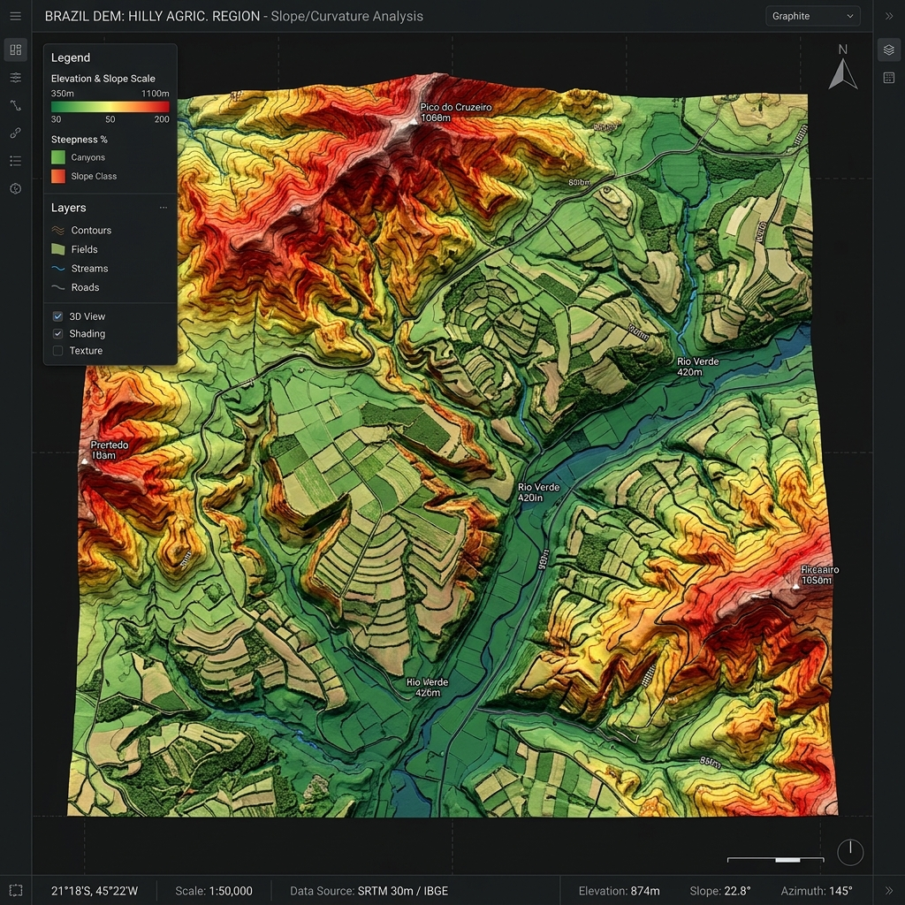
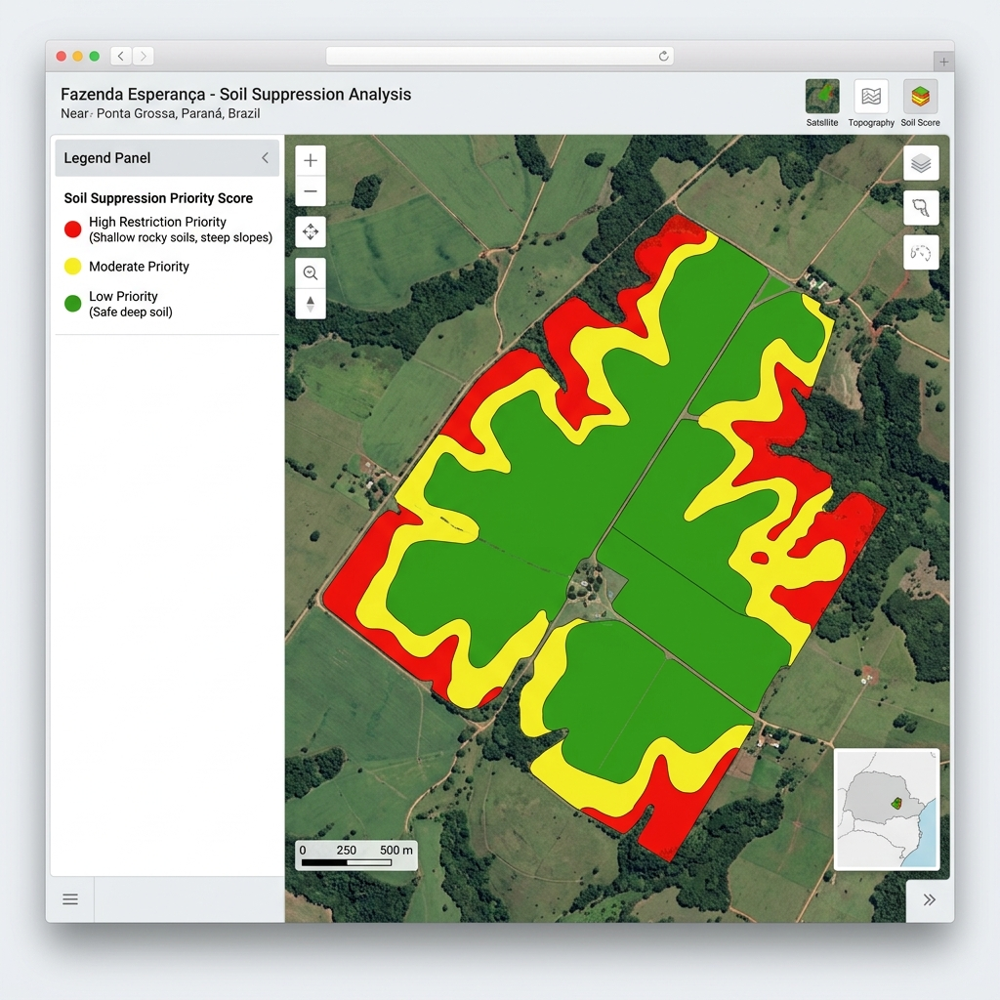

Como identificar solo raso antes de suprimir vegetação: um método por sensoriamento remoto
André Ricartes
Especialista em Geointeligência Rural
Introdução: O Desafio do Planejamento Espacial no Campo
Se você é proprietário rural ou responsável técnico por uma propriedade com o Cadastro Ambiental Rural (CAR) regularizado e em plena conformidade, provavelmente já se deparou com a seguinte questão estratégica: após obter a Autorização de Supressão Vegetal (ASV) para uma área legalmente elegível, por onde começar a execução do manejo?
A resposta para essa pergunta não deveria ser intuitiva, como iniciar "pela área mais próxima da sede" ou "pelo talhão de mais fácil acesso para as máquinas". O manejo sustentável e economicamente viável exige critérios técnicos rigorosos. No planejamento moderno, existe uma variável física crucial que reduz drasticamente o risco operacional antes mesmo que qualquer trator ou maquinário pesado entre no talhão: saber exatamente onde o solo é mais raso.
A profundidade efetiva do perfil do solo é o fator limitante mais negligenciado em projetos de abertura. Solos rasos — caracterizados por pouca profundidade até a rocha matriz ou saprolito — apresentam altíssima vulnerabilidade física, tornando-se a principal causa de erosão acelerada, compactação severa e baixo retorno produtivo a médio prazo.
Suprimir a vegetação nativa em uma área onde o perfil de solo é estruturalmente raso, sem esse diagnóstico prévio, é assumir passivos ambientais e financeiros graves. A perda da cobertura vegetal protetora expõe solos rasos ao impacto direto das chuvas, iniciando processos erosivos laminares que evoluem rapidamente para ravinas ou voçorocas de difícil controle.
1. O Problema Espectral: Solo Raso Não Aparece "A Olho Nu" em Imagens de Satélite
Diferente de eventos visivelmente explícitos em sensores orbitais, como cicatrizes de incêndios florestais, desmatamentos recentes ou a dinâmica de corpos d'água, a profundidade efetiva de um solo não pode ser fotografada diretamente por satélites. A radiação eletromagnética captada pelos sensores ópticos passivos interage apenas com a superfície da terra ou com o dossel da vegetação. Não existe uma banda espectral mágica capaz de atravessar metros de terra e retornar a espessura do horizonte pedológico.
Para superar essa barreira física, a geointeligência para supressão vegetal utiliza técnicas de modelagem preditiva e fusão de dados geoespaciais. Em vez de buscar uma medição direta, interpretamos indicadores biofísicos e topográficos indiretos (proxies espectrais) que, integrados de maneira estatisticamente consistente, revelam os padrões limitantes da profundidade do solo com elevado grau de acurácia.
Esse processo envolve converter indícios fracos e isolados — como a variação de vigor de uma planta durante a seca ou a curvatura de uma encosta — em um score ponderado de prioridade robusto. Esse indicador torna-se a base científica indispensável para orientar a tomada de decisão no planejamento ambiental propriedade rural.
2. O Método: Três Evidências Integradas para um Único Score de Prioridade
Em um estudo de caso recente que desenvolvemos para uma propriedade rural de médio-grande porte no Centro-Oeste brasileiro, implementamos um modelo analítico de score de prioridade de solo raso. O método consistiu na espacialização de três camadas de evidências geoespaciais independentes e complementares:
Evidência 1: Análise Pedológica Digital via Grids Globais
Utilizamos bases de dados geoespaciais pedológicas globais (como o SoilGrids, desenvolvido pelo International Soil Reference and Information Centre - ISRIC) calibradas com dados locais. Por meio da análise de solo por satélite e modelagem estatística, extraímos indicadores associados a perfis rasos (como Neossolos Litólicos ou Cambissolos rasos):
- Volume de fragmentos grossos (cascalho) em profundidade: Perfis rasos apresentam alta concentração de fragmentos rochosos logo nas primeiras camadas de solo.
- Densidade aparente do solo (Bulk Density): Solos com menor profundidade útil tendem a apresentar maior compactação natural nas proximidades da rocha.
- Estoque de carbono orgânico: A restrição ao desenvolvimento radicular limita o acúmulo de matéria orgânica ao longo do perfil em comparação com solos profundos.
Evidência 2: Geomorfometria e Dinâmica do Relevo (Modelos Digitais de Elevação)
O relevo determina a velocidade e a direção do fluxo de água, governando os processos históricos de erosão e sedimentação. A partir de Modelos Digitais de Elevação (MDE) de alta resolução, processamos atributos topográficos essenciais:
A declividade (slope) e a curvatura do terreno indicam onde o processo erosivo removeu o solo ao longo de milhares de anos. Encostas convexas e com alta declividade tendem a perder material mais rapidamente do que a taxa de intemperismo das rochas, gerando perfis de solo rasos e vulneráveis. Por outro lado, fundos de vale e encostas côncavas atuam como zonas de deposição (coluvionamento), acumulando solos profundos e ricos em nutrientes.

Evidência 3: Persistência do Estresse Hídrico por Índices Biofísicos (NDVI e NDMI)
A própria vegetação funciona como um sensor biológico altamente sensível às condições físicas do solo. Solos rasos possuem baixa Capacidade de Água Disponível (CAD). Quando a estação seca atinge a região, as plantas localizadas sobre solos pouco profundos não conseguem aprofundar suas raízes até os lençóis freáticos ou zonas úmidas profundas, entrando em estresse hídrico muito antes da vegetação estabelecida em solos profundos.
Para mapear essa resposta biológica, analisamos uma série histórica temporal de 6 anos consecutivos durante o pico da seca, cruzando dois índices espectrais calculados a partir de imagens da constelação Sentinel-2:
- NDVI (Índice de Vegetação por Diferença Normalizada): Mapeia a atividade fotossintética e a densidade da biomassa foliar.
- NDMI (Índice de Diferença Normalizada de Umidade): Detecta o teor de água no dossel da vegetação, sendo altamente correlacionado com o estresse hídrico vegetal preliminar.
A recorrência plurianual desse estresse hídrico da vegetação (o indicador NDVI NDMI solo) isola anomalias sazonais pontuais (como queimadas ou pragas) e expõe a limitação física estrutural do solo raso subjacente. Processamos essa série histórica densa utilizando ferramentas eficientes como DuckDB e Python para extrair os pixels que sistematicamente apresentavam perda severa de vigor na estiagem.
Ao integrar o comportamento da vegetação e o relevo, analisamos a assinatura temporal do terreno. Esse comportamento consistente da vegetação ao longo das safras reflete a sua dependência direta da física do solo, caracterizando a Inércia Produtiva que utilizamos para validar a estabilidade das áreas antes de qualquer intervenção.
3. O Resultado: Um Score Ponderado para Priorização de Supressão Vegetal
Cada uma dessas evidências, se analisada individualmente, apresenta limitações e pode induzir a falsos positivos. Uma área de relevo plano pode ter solo raso devido a uma camada de impedimento geológico (como laterita/canga); uma vegetação com baixo NDVI pode ser apenas reflexo de uma doença pontual.
Contudo, ao fundir essas três camadas em um algoritmo de sobreposição ponderada, as evidências se reforçam mutuamente. O resultado é um mapa contínuo com um score de prioridade de solo raso variando de 0 a 100.
Este produto final não representa um veredito binário inflexível do tipo "pode suprimir / não pode suprimir". Em vez disso, classifica a propriedade em faixas de atenção (baixa, moderada e alta prioridade de restrição):
- Atenção Baixa (Zonas Verdes): Solos profundos, planos e com boa retenção de umidade. São as áreas prioritárias para o início da supressão vegetal, com menor risco erosivo e maior potencial de retorno produtivo.
- Atenção Moderada (Zonas Amarelas): Indicadores inconclusivos ou relevo intermediário. Áreas reservadas para a segunda fase do manejo, requerendo amostragens pontuais em campo.
- Atenção Alta (Zonas Vermelhas): Coincidência de relevo declivoso, solo pedregoso estimado e forte estresse hídrico persistente. Áreas onde a supressão deve ser evitada ou rigorosamente avaliada, pois o risco de degradação imediata do solo e perda de produtividade agrícola é extremo.

4. O Valor Prático da Consultoria Geoespacial Agro na Gestão de Riscos
A incorporação dessa análise na rotina operacional traz impactos diretos na rentabilidade e segurança jurídica da gestão agropecuária:
- Mitigação Drástica do Risco de Erosão: Evita a abertura de frentes de supressão em encostas vulneráveis, prevenindo o surgimento de sulcos erosivos severos que inviabilizam o uso de maquinário.
- Otimização Financeira da Etapa de Campo: Reduz a necessidade de vistorias exaustivas por toda a extensão da propriedade. O responsável técnico direciona as equipes de tradagem e sondagem diretamente para os pontos classificados como atenção moderada e alta, economizando tempo e recursos de mobilização.
- Segurança Jurídica e Relações Institucionais: O mapa de prioridade oferece uma justificativa técnica blindada perante órgãos fiscalizadores, bancos financiadores de crédito rural e seguradoras, demonstrando conformidade com as melhores práticas de conservação de solo e água.
- Maximização do Retorno sobre o Investimento (ROI): Concentra os insumos agrícolas, fertilizantes e corretivos nas áreas de solos profundos, onde a resposta das culturas ao manejo agronômico é otimizada.
Conclusão: A Geointeligência Direcionando o Trabalho de Campo
É imperativo destacar que nenhum modelo matemático ou imagem de satélite substitui a verdade de campo. O verdadeiro poder da consultoria geoespacial agro não reside em eliminar a verificação in loco, mas sim em direcioná-la com inteligência de dados. Em vez de percorrer às cegas uma área de 1.500 hectares, a geointeligência aponta com precisão os 5% de pontos críticos que necessitam de uma sondagem física detalhada.
Decidir a supressão vegetal baseando-se em achismos ou conveniência logística é um modelo de gestão obsoleto. O uso estratégico de dados biofísicos orbitais e geomorfometria eleva a segurança das operações florestais e agrícolas a um patamar de precisão científica.